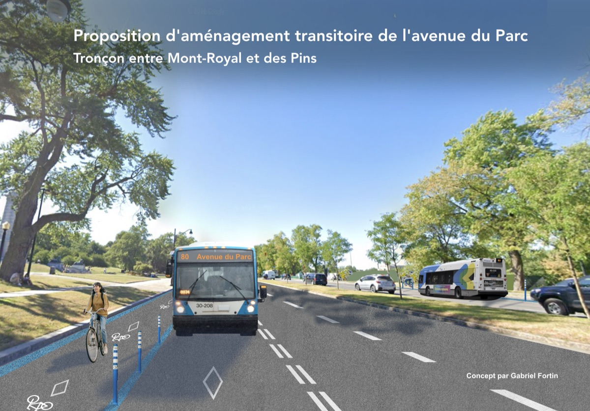

Pendant dix jours, les Championnats du monde de cyclisme sur route UCI ont fait vibrer nos rues. Des milliers de personnes ont redécouvert Montréal autrement : à pied, à vélo, dans des rues apaisées et vibrantes.
Alors qu'on prédisait un enfer pendant une semaine, on a plutôt eu droit à un événement festif et positif. Mes collègues et moi croyons que la fermeture complète de l'avenue du Parc pendant un mois aurait été l'occasion idéale pour enfin amorcer la sécurisation de cet axe dangereux.
Après un mois de fermeture complète, l'avenue du Parc rouvrira à la circulation lundi. Pour nous, il s'agit d'une opportunité manquée d'amorcer, enfin, la sécurisation de cet axe dangereux. On aurait pu réouvrir l'avenue avec des aménagements transitoires qui auraient fait une grande différence pour la sécurité et la fluidité des déplacements.

Le tronçon de l'avenue du Parc entre l'avenue du Mont-Royal et l'avenue des Pins figure parmi les plus dangereux du réseau en matière de mortalité, avec quatre décès dans les dix dernières années. C'est aussi, paradoxalement, l'un des plus simples à réaménager : avec ses huit voies de circulation, il offre l'espace nécessaire pour un aménagement transitoire rapide, sans attendre la réalisation du projet de réaménagement complet, qui s'étalera vraisemblablement sur plusieurs années. En effet, ses huit voies incitent les automobilistes à rouler à toute vitesse. Comme le rapport de la coroner le rapportait en avril dernier, nous devons repartager l'espace sur l'avenue du Parc pour améliorer sa sécurité. Au lieu de remettre quatre voies pour les voitures, on aurait pu, par exemple, allouer deux voies aux bus 24/7, deux voies aux vélos, tout en maintenant quatre voies pour les voitures.
Les lignes de bus 80 et 129 sont très utilisées, et des voies réservées amélioreraient nettement la fluidité de leurs déplacements. Par ailleurs, faute d'aménagement adéquat, de nombreux travailleur-euses et étudiant-es qui se rendent au centre-ville à vélo circulent sur le trottoir du côté ouest de l'avenue, ou se mettent en danger en roulant à côté des véhicules. Un lien cyclable reliant le chemin de la Côte-Sainte-Catherine, l'avenue du Mont-Royal, la rue Rachel, l'avenue des Pins et la rue Hutchison, dans Milton-Parc, viendrait combler une discontinuité majeure du réseau cyclable. Sur ce tronçon, les usager-ères ne devraient pas avoir à attendre : des gains importants en sécurité et en mobilité peuvent y être réalisés rapidement, et ce sans sacrifier la fluidité de la circulation véhiculaire.
La mairesse Martinez Ferrada s'est engagée à sécuriser l'avenue du Parc, mais un réaménagement prendra nécessairement plusieurs années. D'ici-là, des actions doivent être prises rapidement pour sécuriser l'avenue. Du marquage au sol, des bollards, tout cela peut être installé plus rapidement et à coûts moins élevés qu'un réaménagement permanent, en attendant les travaux qui débuteront dans plusieurs années, et qui seront terminés encore bien des années plus tard.
Un événement aussi exceptionnel que les Championnats du monde de cyclisme et la fermeture complète de l'avenue du Parc pendant un mois auraient été une occasion en or de tester, d'apprendre et de revoir notre façon de penser la fluidité, qui n'est pas seulement un concept propre à l'automobile. On ne devrait jamais se contenter de tout remettre à l'identique.
Le Plateau est prêt à trouver des solutions plus rapidement et voici une idée d'aménagement transitoire que nous serions prêts à essayer : un aménagement léger, mais qui viendrait fluidifier le transport collectif, sécuriser les transports actifs, tout cela sans réduire l'efficacité des autres modes de transport, y compris les voitures. Et vous, qu'aimeriez-vous voir sur l'avenue du Parc?